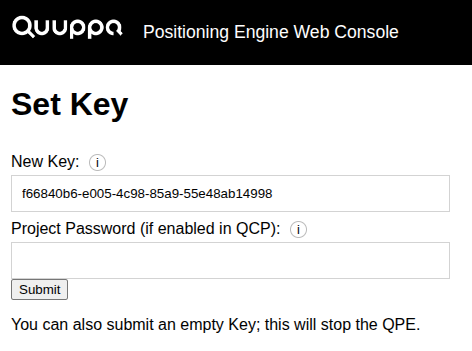
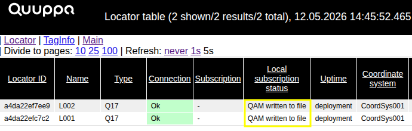
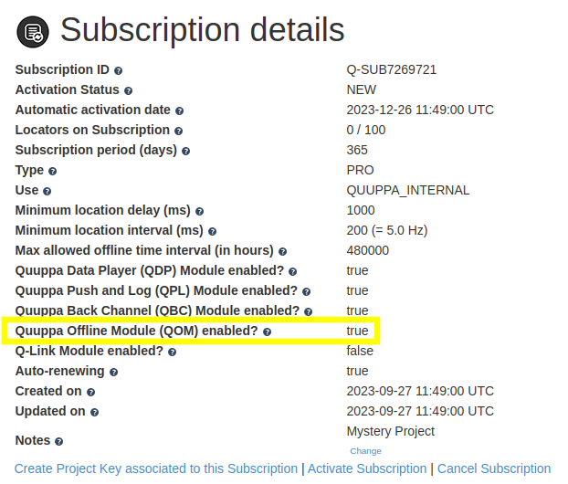
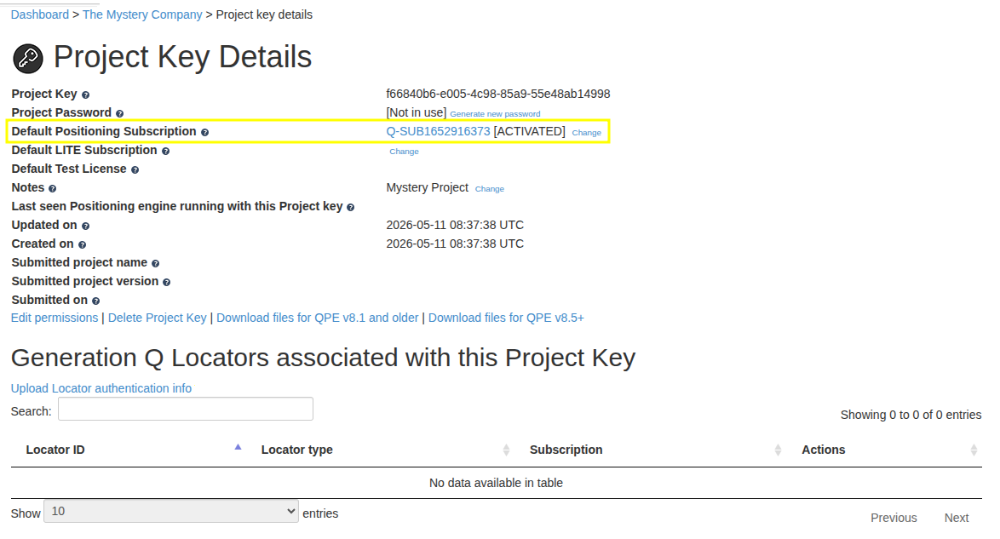
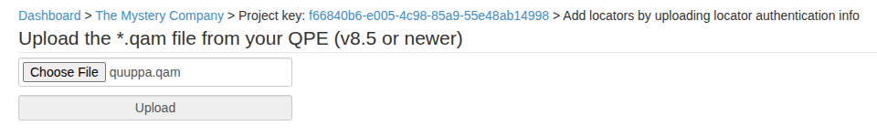
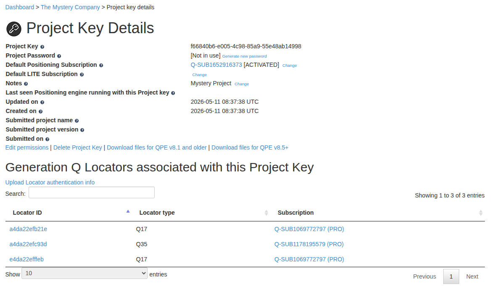
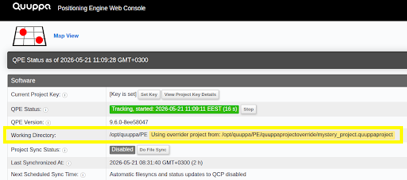
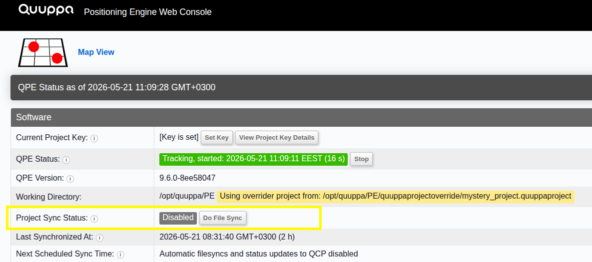
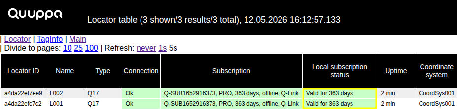

Using the Offline Module
The Offline Module is an optional software feature for Quuppa subscriptions, which allows the Quuppa Positioning Engine (QPE) to run a project completely offline. The feature has been developed for situations where the Quuppa system cannot be connected to a network (e.g., for security reasons or due to unstable on-site internet connections). Please note that in this documentation, "online" indicates that the Locators are powered and successfully communicating with the local on-site QPE, not connected to the public internet.
When the Offline Module is enabled, the 48-hour connectivity requirement is removed. However, please note that licenses remain valid only for the duration of your subscription term; you must manually update your license files before they expire to maintain system functionality. Note that storing project files locally without submitting them to the Quuppa Customer Portal (QCP) will limit Quuppa's ability to provide remote troubleshooting support in the future.
Prerequisites
Before you can start implementing your offline project, you must have the following system installation and deployment steps completed:
- Physical deployment: All Locators are physically installed and cabled, and are receiving power and data connectivity, either through network switches, Quuppa Q-Ports or Q-Link.
- System components: The Quuppa Positioning Engine (QPE) and the controller are installed and running on-site.
- Project Key: A Project Key has been generated in the Quuppa Customer Portal (QCP).
- Locator activation: All Locators must be online and successfully
communicating with the QPE to be included in the resulting Quuppa
Authentication Message file (quuppa.qam file).
System Configuration
For more information about deploying your Quuppa system, please see our Quuppa Development Kit Quick Start Guide .
System Configuration
Start configuring your offline project by following the steps below:
- Stop Tomcat.
- Start-up parameters: Add
-DdoNotConnectToQCPparameter to your Java start-up parameters. Please refer to the Java Virtual Machine Startup Parameters section for more about the available optional start-up parameters. - Project override folder: In the QPE's project folder (defined in the QPE
startup configuration as
-Dproject.folder), create a quuppaprojectoverride folder, for example, /opt/quuppa/PE/quuppaprojectoverride.Ensure the owner and access rights of the new subfolder match the parent QPE project folder.
- Copy QSP project file: Copy your QSP project file
(.quuppaproject) from your local computer into the
newly created quuppaprojectoverride subfolder. The QSP
project file includes the IDs of all the Locators physically installed at the
site.
Ensure the owner and access rights of the QSP project file also match the parent QPE project folder.
- Start Tomcat.
- Set Project Key: Open the QPE Web console, enter a Project Key and
submit.

Note:If you already associated the Project Key with the project file in the Quuppa Site Planner, the QPE detects and applies it automatically at start-up. Manual entry is not required. - Start QPE.
Quuppa Authentication Message (.qam) Generation
The QPE creates a Quuppa Authentication Message (quuppa.qam) file in the QPE project folder. This file contains the Locator authentication data that you must upload to the Quuppa Customer Portal (QCP) to obtain Locator licences for offline use.
- Locator count validation: Before copying the quuppa.qam file, wait at least one minute after all Locators are physically connected to allow the QPE to process and include their IDs in the authentication file.
Open the QPE Locator details table and verify that every physical Locator shows the following values:
- The Connection column shows
ok(indicating the Locator is online and connected to QPE). - The Local subscription status column shows
QAM written to file.

All Locators must show as online to be included in the authentication file. Do not copy the file until every Locator displays these statuses. These combined values confirm that the system has successfully recorded all required authentication data in the file.
- The Connection column shows
- File retrieval and transfer: Copy the quuppa.qam file to a USB memory stick or external drive for later uploading to the Quuppa Customer Portal.
Important:Any Locator not yet registered when the file is copied will not be authenticated by the portal and will not function. Always cross-check the Locator count in the QPE against your physical installation before moving the file to your USB stick to ensure it is complete.
Portal Upload and Finalisation
- In the Quuppa Customer Portal (QCP) main Dashboard, open the Subscriptions list.
- Select the relevant subscription by clicking on the subscription ID. This will open the Subscription Details page.
- Check that the Offline Module has been enabled.

Note:Locators under different subscriptions can be used together in the same offline project, as long as all subscriptions have the Offline Module enabled. Please check the Subscription details page for each subscription that you want to use in this project. - Navigate to the Project Key Details page of your project. Check that the
Project Key is linked to the correct subscription with the Offline Module
enabled. If the Project Key is not linked, link it now. Any new Locators in your
.qam file will be added to this specific subscription.

- Click the Upload locator authentication info link
- Click Choose File and select the
quuppa.qam file that you copied from the QPE project
folder earlier. Click Upload to upload the file.

Attention:You have to upload the .qam file to the QCP every time you add new Locators to the project and connect them to the QPE. - You can now see authenticated Locators added to the Project Key.

Note:If the Locators have not previously been associated with a subscription in the QCP, adding them to the Project Key will automatically associate them with the subscription linked to this Project Key. - Download files from QCP: Once the Locators are added to the Project Key and the subscription is activated, click the Download files for QPE v8.5+ button on the Project Key Details page to download the licence file, licence signature and the sync file from QCP. If you have submitted the project file to the QCP, the downloaded files will also include the project file and the project signature.
- Stop Tomcat.
- Transfer files: Unzip the downloaded files and transfer them to the
offline QPE's project folder, which is defined in the QPE configuration as
-Dproject.folder. Use a storage devise, such as a USB stick to move the data. Verify that the owner and access rights of the transferred files match the QPE project folder. - Start Tomcat.
- Working Directory validation: Open the QPE Web Console and verify that
the Working Directory row confirms the system is using the project
override folder.

Important:Only one .quuppaproject file can be stored in the override folder at a time.Warning:You are responsible for backing up the project files and ensuring that you are always using the latest version of the file. - Tracking validation: Verify that the QPE is runs in tracking mode and
that the Project Sync Status is Disabled.

- Connectivity check: Wait at least one minute for all Locators to connect.
Verify that the local subscription status has updated and displays the validity
period matching your subscription term.

Your project is now running completely offline.